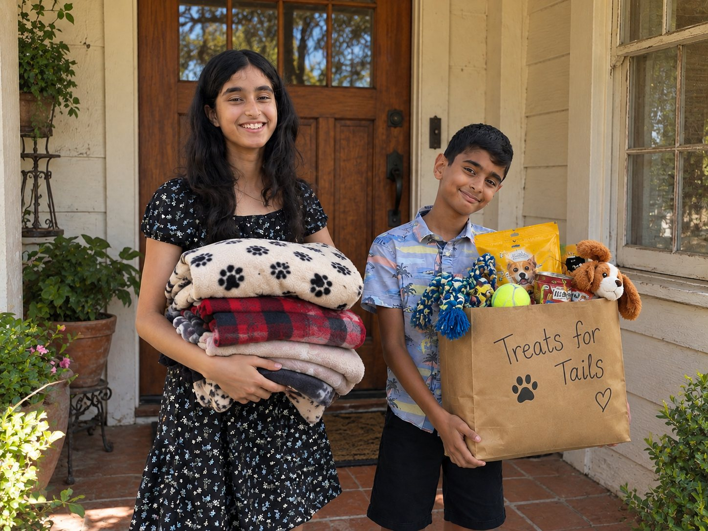

Blankets, toys, and essentials for shelter animals, collected from neighbors, delivered with love.
We believe every pet deserves comfort and care, whatever their circumstances. Through community donations and dedicated volunteer efforts, we make a difference one blanket, one toy, and one wagging tail at a time.

Simple things shelters actually need, gathered through community donation drives.
Cozy, washable blankets for kennels and foster homes.
Toys that keep shelter pets playing.
Supplies shelters request, gathered through drives.
Every number below comes straight from our donation logs.
Craft days, supply drives, shelter deliveries, there's a job for every pair of hands (and every skill level).
Volunteer with us Donate supplies